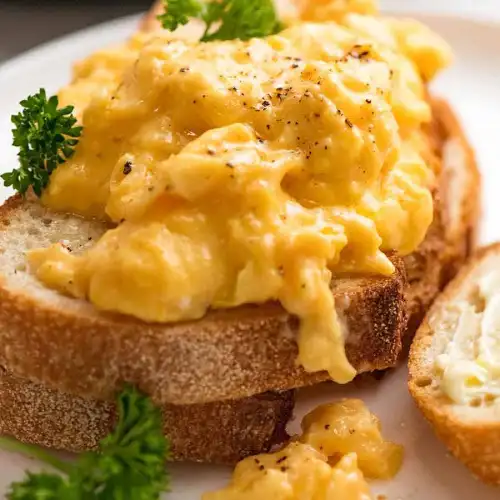

Scrambled Eggs

Scrambled eggs Recipe
Scrambled eggs is a dish made from eggs which are beaten then slowly stirred in a pan with butter until curds form.
Ingredients
- 3 Eggs
- 2 Slices of bread
- 30g of Butter
Steps
- Beat the eggs in a bowl with a fork until the yolk is fully combined into the whites.
- Add the butter to a pan and bring to a low heat until the butter melts.
- Pour the eggs into the pan.
- Place the bread into the toaster and turn on.
- Slowly and regularly stir the eggs until curds begin to form. Stop and turn off the heat once the eggs are creamy but not quite fully cooked (they will finish off cooking via residual heat)."
- Once the toast is ready, top with the cooked eggs.